홈 46컷을 넓은 PC(1728px)와 휴대폰(390px)에서 컷마다 4.5초씩 지켜보며 찍었습니다. 새 쪽 13개도 끝까지 찍어 봤습니다. 지금 화면은 회사 홈 미리보기에서 볼 수 있습니다.
컷마다 0.5초 간격으로 9번씩 멈춰 보며 글자끼리 겹치거나 화면 밖으로 나가는 순간을 잡았습니다. 장식용 배경 휴대폰 속 작은 글자는 빼고, 손님 눈에 띄는 것만 추렸습니다.
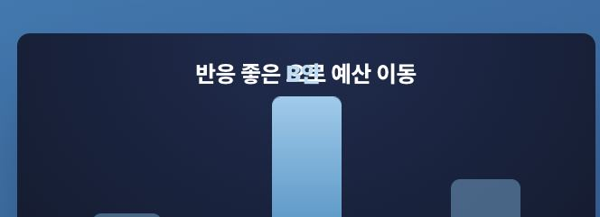
「B안」이 「으로」 위에 올라앉아 「반응 좋은 B안 예산 이동」처럼 읽힙니다. 움직이는 그림 안의 글자를 전부 띄워 배치하는 공통 규칙이 문장 속 「B안」까지 띄워서 생긴 일입니다.
문장 속 글자만 제자리에 두도록 한 줄 고칩니다. 같은 그림이 퍼포먼스 쪽에도 쓰여서 두 곳이 함께 고쳐집니다.
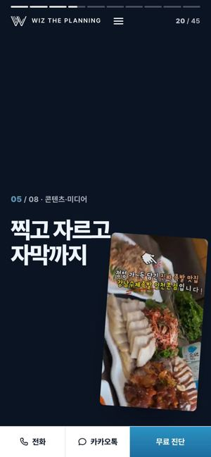
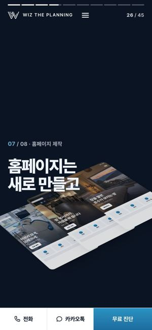
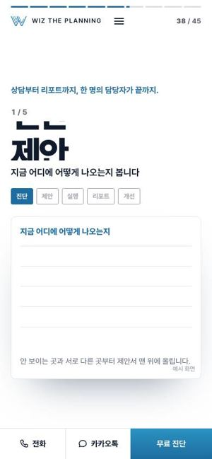
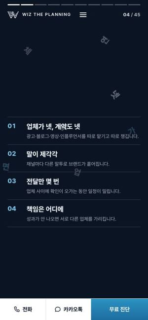
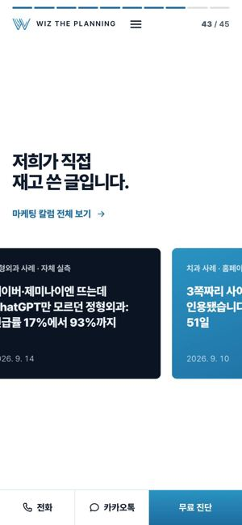
| 어디 | 지금 무엇이 보이나 | 바뀐 뒤 |
|---|---|---|
| 콘텐츠·미디어 첫 컷(20번) 휴대폰 | 기울어진 릴스 영상이 「찍고 자르고 자막까지」 제목의 오른쪽 절반을 덮습니다. | 휴대폰에서는 영상을 제목 아래로 내립니다. PC 배치는 그대로 둡니다. |
| 홈페이지 제작 첫 컷(26번) 휴대폰 | 비스듬히 놓인 홈페이지 그림 석 장이 「새로 만들고」 글자 위로 올라옵니다. | 같은 방법으로 그림을 제목 아래로 내립니다. |
| 진행 과정 5컷(38~42번) PC·휴대폰 | 큰 글자가 슬롯처럼 굴러가는 0.3~1초 사이에 다른 단계 이름이 겹쳐 보입니다. 1단계인데 「제안」이, 2단계인데 「개선」이 잠깐 뜹니다. | 굴리기를 빼고 그 단계 이름만 위에서 내려오게 합니다. |
| 「업체가 넷이면 연락도 넷.」(4번) 휴대폰 | 3초쯤에 글자가 서로 겹치고, 3.6초에는 제목 글자가 화면 밖으로 흩어져 제목 줄이 비어 버립니다. | 글자가 한 번 흔들렸다가 제자리에 남게 합니다. 깨지는 느낌은 그대로 두되 제목은 끝까지 읽힙니다. |
| 인사이트 카드(43번) PC·휴대폰 | 카드 줄이 옆으로 흘러가서 멈춘 순간 첫 카드가 왼쪽에서 잘립니다. 넓은 화면에서는 오른쪽 카드도 잘립니다. | 카드 3장을 화면 폭에 맞춰 세웁니다. 나머지 글은 「칼럼 전체 보기」로 보냅니다. |
| 홈페이지 제작 첫 컷 왼쪽 잘림 사장님 화면 | 사장님 캡처에서는 「07 / 08」과 「홈페이지는」 앞부분이 왼쪽에서 잘렸습니다. 1728px에서 다시 찍어 보니 다 보였습니다. 컷이 밀려 들어오는 도중의 장면으로 보입니다 [추론]. | 이 컷의 들어오는 효과를 옆으로 밀기에서 제자리 나타나기로 바꿉니다. |
여덟 서비스는 컷이 셋씩인데 첫 컷은 큰 제목만 있고 넓은 화면에서는 3분의 2가 비어 있습니다. 글로벌과 오프라인 미디어는 그림이 아예 없습니다. 둘째·셋째 컷(먼저 하는 일, 상품 목록)은 지금도 그림이 있어서 그대로 둡니다.
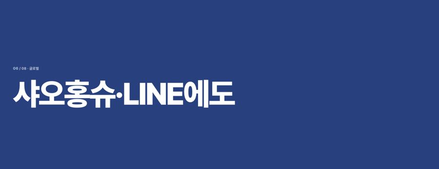
사이트 다른 곳에서 이미 쓰는 예시 화면 두 장을 크게 키웁니다. 「예시 화면」 표시는 그대로 붙입니다.
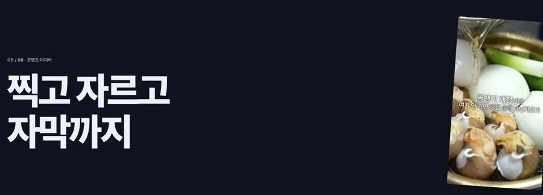
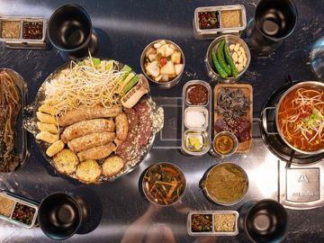
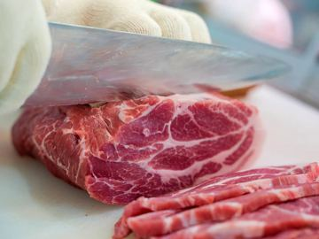
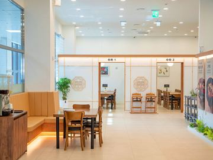
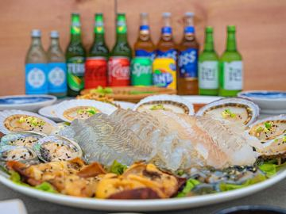
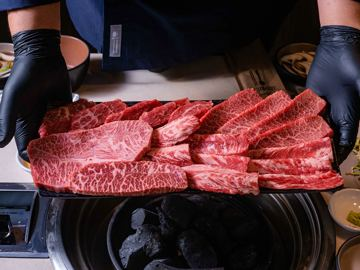
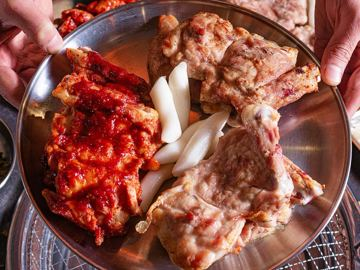
옛 포트폴리오 쪽에 있는 촬영 사진 255장 가운데 간판·상호가 안 보이는 컷만 고릅니다. 사진 사이로 릴스 영상 1~2개가 재생됩니다.
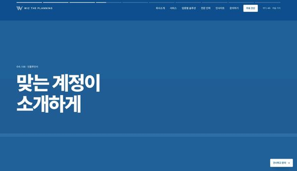
옛 인플루언서 쪽 사진을 씁니다. 우리가 직접 운영하는 @matzip_town(팔로워 5.1만)을 맨 앞에 둡니다.
| 컷 | 지금 | 채울 것 (이미 가진 자료) |
|---|---|---|
| 퍼포먼스(11번) | 「광고는 마케터가 직접 돌립니다」 제목만 | 광고 관리자 숫자 화면 예시(클릭 1,317 · 99,939원 같은 지금 그림 속 숫자)를 크게 |
| 바이럴(14번) | 사선 무늬 배경 위 제목만 | 블로그 검색 결과 화면 예시. 「인기글」 표시가 붙은 우리 글이 맨 위에 오는 장면 |
| 인플루언서(17번) | 제목만 | 위 그림처럼 릴스 세 장 |
| 콘텐츠·미디어(20번) | 오른쪽 끝에 영상 하나 | 위 그림처럼 촬영 사진 벽과 릴스 영상 |
| 글로벌(23번) | 제목만 | 위 그림처럼 샤오홍슈·LINE 화면 |
| 홈페이지 제작(26번) | 오른쪽에 작은 그림 | 그림을 지금의 2배로 키우고 제목 바로 옆으로 |
| 오프라인 미디어(29번) | 제목만 | 엘리베이터 사진에 광고가 꽉 찬 화면(아래 3번) |
사진 속 TV 화면은 높이 474픽셀인데 광고 글상자가 위쪽 283픽셀만 덮고 있습니다. 그래서 아래 40%가 파란 빈 화면으로 남습니다. 화면이 비스듬히 찍혀 있어서 네모난 상자로는 맞지 않습니다.
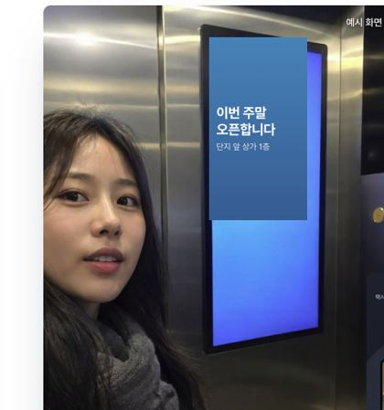
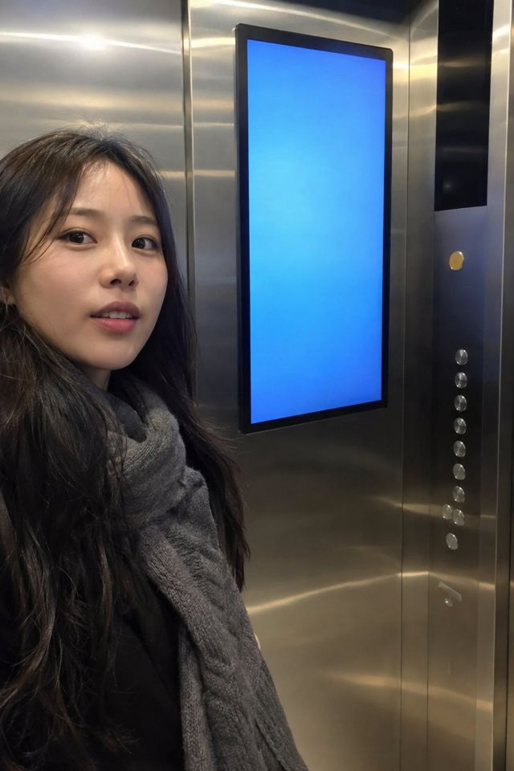
사진 속 화면의 네 모서리를 재서 광고를 원근 그대로 얹었습니다. 실제로 만들 때는 광고 장면 2~3장이 차례로 바뀌게 해서 「TV가 켜져 있는」 느낌을 냅니다. 같은 사진이 쓰이는 홈 배경, 오프라인 미디어 쪽, 서비스 그림 3곳이 함께 바뀝니다.
지금은 실제 주간 보고서를 찍은 사진이라 업체명과 글 제목을 흐리게 가렸습니다. 그 탓에 화면이 뿌옇게 보입니다. 바뀐 뒤 보고서는 사진 속 숫자를 하나도 바꾸지 않고 다시 그립니다. 가려야 할 글 제목은 칸에서 빼고 날짜·채널만 남깁니다. 홈 41번 컷과 전문 인력 쪽에 같이 들어갑니다.
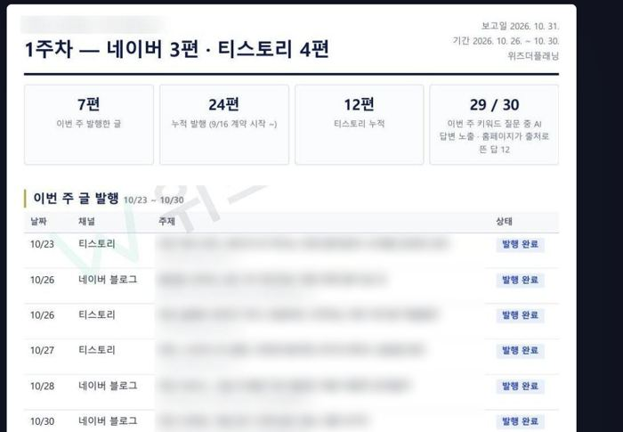
이번 주 발행
누적 발행
(9/16 계약 시작부터)
티스토리 누적
키워드 질문 30개 중 29개에서 노출 · 홈페이지가 출처로 뜬 답 12개
숫자는 사진 속 보고서에 적힌 그대로입니다(7편 · 24편 · 12편 · 29/30 · 출처 12). 사진에 보이는 발행 줄은 6줄이라 7편 가운데 6편만 그렸습니다. 나머지 한 줄은 원본 보고서를 보고 채웁니다.
진행 과정의 다른 네 컷(진단표·제안서·일정표·개선 그래프)도 넓은 화면에서 오른쪽에 작게 떠 있습니다. 보고서와 같은 디자인으로 맞추고 지금보다 1.5배 크게 키웁니다.
새 쪽은 질문과 답으로 읽기 좋게 짜여 있지만 그림이 적습니다. 서비스 쪽 그림은 첫 화면 그림과 예시 묶음 하나로 2개뿐입니다. 업종 쪽은 사진이 1장이고 회사소개에는 한 장도 없습니다 [실측: 코드와 캡처].
| 쪽 | 지금 그림 | 넣을 것 | 자료 |
|---|---|---|---|
| 검색 최적화 | 2 | 실제 AI 진단 보고서 캡처 3장(업체명 가림)과 「ChatGPT 추천 1위」 기록 화면 | 보유 (보고서 9장) |
| 퍼포먼스 | 2 | 시안 A·B·C 비교 화면과 광고 숫자 화면 예시를 크게 | 보유 |
| 바이럴 | 2 | 블로그 1위·인기글 화면 예시 3장 | 보유 (예시 화면) |
| 인플루언서 | 2 | @matzip_town 피드 사진 6장과 섭외 장면 사진 | 보유 (사진 9장) |
| 콘텐츠·미디어 | 2 | 촬영 사진 8~12장 띠(업종별로 음식·공간·운동)와 릴스 영상 3편 | 보유 (촬영 255장 · 릴스 16편) |
| 글로벌 | 2 | 샤오홍슈·도우인·LINE 화면 예시 각 1장 | 보유 (예시 화면) |
| 홈페이지 제작 | 2 | 우리가 만든 사이트 첫 화면 캡처 4~6장 | 사장님 확인 (공개해도 되는 곳) |
| 오프라인 미디어 | 2 | 엘리베이터·택배차·극장 광고가 꽉 찬 사진과 단지 지도 사진 | 보유 (지도 사진 1장) |
| 로컬 · 성장 · 엔터프라이즈 | 1씩 | 업종에 맞는 예시 3장씩(로컬은 매장·병원·학원, 성장은 상세페이지·광고, 엔터프라이즈는 기업 리포트 2장) | 보유 |
| 전문 인력 | 1 | 보고서 4장을 넘겨 보는 칸과 촬영·회의 현장 사진 | 보고서 보유 · 현장 사진은 사장님 |
| 회사소개 | 0 | 사무실·팀 사진, 오시는 길 지도 | 사장님 (사진) |
| 무엇 | 왜 문제인가 | 처리 |
|---|---|---|
| 미리보기에서는 문의 폼이 메일로 가지 않음 | 미리보기 프로젝트에 메일 발송 열쇠가 없습니다 [실측]. 링크를 받은 사람이 신청하면 사장님께 닿지 않습니다. | 운영으로 옮기면 저절로 해결됩니다. 그 전까지는 둘러보기용으로만 공유 |
| 안 쓰는 사진 8장 | 서비스 이름이 붙은 사진 8장이 어디에도 쓰이지 않습니다. 「오프라인」 사진이 중식 요리, 「글로벌」 사진이 아이스크림이라 이름과 내용도 맞지 않습니다. | 지웁니다 |
| 「분야별 시니어」 팀 구조 컷(36번) | 원 하나와 팀 이름 다섯 줄뿐입니다. | 팀 이름·리더 사진이 오면 사진 카드로 바꿉니다 |
| 차례 | 하는 일 | 누가 |
|---|---|---|
| 1차 | 1번 글자 겹침 6곳 → 3번 엘리베이터 → 4번 보고서·진행 과정 → 2번 서비스 첫 컷 7개 → 5번 새 쪽 중 자료를 가진 11개 | 클로드 · 사장님 할 일 없음 |
| 확인 | 미리보기 주소에 올리고 PC·휴대폰 캡처와 겹침 검사를 다시 돌려 0건인지 보여 드림 | 클로드 |
| 2차 | 홈페이지 제작 사례, 사무실·팀 사진, 리더 사진·이력, 팀 이름, 소개서 PDF가 들어오는 대로 채움 | 사장님 자료 → 클로드 |